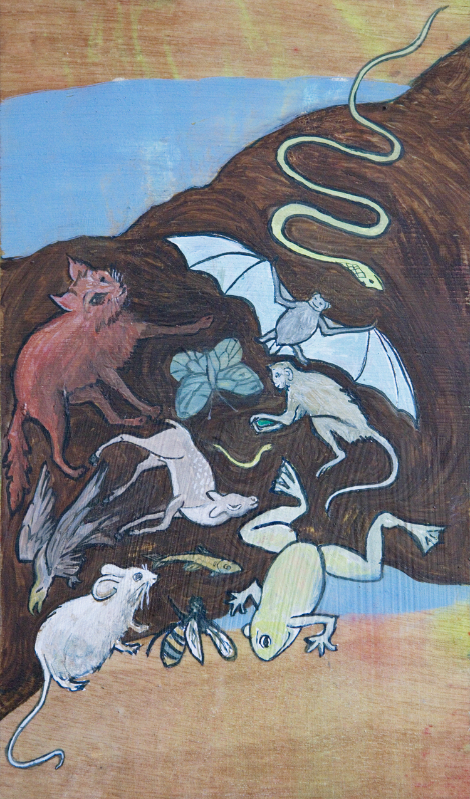

Workshops, Retreats and Keynotes
- Plus Ceremonies and Worship Services -
 Since 1993, I've traveled all over North America, facilitating workshops and retreats, delivering keynotes,
creating worship services and singing. In the first year alone I flew to Southern California, Oklahoma, North
Carolina, Saskatchewan, Canada, Michigan, Missouri and many cities in the Upper Midwest. Since then I've
flown all over the US, from north to south and from east to west.
Since 1993, I've traveled all over North America, facilitating workshops and retreats, delivering keynotes,
creating worship services and singing. In the first year alone I flew to Southern California, Oklahoma, North
Carolina, Saskatchewan, Canada, Michigan, Missouri and many cities in the Upper Midwest. Since then I've
flown all over the US, from north to south and from east to west.
I guess I'm a born teacher and performer, because I'll walk more than a mile and fly many hundreds to create learning experiences that include music, movement, and the kind of work and play that allows people to take the next step in their personal growth. I've performed weddings and memorial services, worked with children, led many worship services and rituals, and everywhere I go, I sing my music. I work a great deal with Unitarian Universalists, since that's my religious home, but I've also presented workshops for people in earth-centered traditions, for Religious Scientists, for Unity Church and for interfaith groups. My ecofeminism speaks to many people. What I have to say seems to resonate with seekers, and there are a lot of us today.
You were the piece de resistance at the conference! It was exhilarating!
Workshop and Keynote Topics
The World is Your Oracle
Divination allows you to discover your inner wisdom and connect with its counsel. From Nancy's new book of the same name.
Mythic Modes
Utilizing intellectual, physical, creative and ritual modes, make the sacred stories that undergird your life visible while connecting consciously with your deepest concerns and your truest self.
Dream Wisdom
Beginning with a dream incubation, we interpret dreams with role-playing, dialoging, ritual, Gestalt, etc.
Invoking the Fire Dragon
Invoke the fire dragon and usher eros into your life, infusing yourself with the playful energy that is the source for ecstatic movement, sensuality and pleasure.
Reclaiming Our Stories, Reclaiming Ourselves
Empower your story through personal mythmaking and multicultural tales. While the hero's quest is validated in our culture, other stories are trivialized. We need the wisdom of each person's life history.
Honoring Each Other, Honoring Ourselves
An anti-racism workshop focusing on intercultural understanding, discovering our deep connections and celebrating our diversity.
In the Beginning: Goddess Mythology in Story and Song
An interactive lecture honoring goddesses from several traditions. We've come to know why women need the Goddess; Nancy demonstrates how important She can be for men as well.
Balancing Dark & Light
Look inward for your own fertile darkness and the light which illuminates it. The dark is shunned in our culture, but dark earth energies are at the core of all creativity.
Crone and Sage
Explore the wisdom of aging, the power to let go, the power of endings and the power of death and rebirth. 
A Council of All Beings
In this communal ritual, we set aside our human identity in order to speak on behalf of other life-forms on our beautiful, but threatened earth.
Seasonal Rituals
Nancy creates rituals and worship services to honor the cycles of earth's seasons.
Finding Your Muse
In a participatory experience, follow your artistic urges (visual, musical, verbal) as a path to the sacred.
Moving/Meditation: Grounding, Singing and Dancing
Explore dance, song, visualization and contemplative practices.
I found god in myself
Investigate how goddess imagery strengthens your power as a woman through story, ritual & song.
It's Elemental
Experience the spiritual essence of the five basic elements: earth, air, fire, water and spirit.
More Topics
- Ssnake GoddesssessS
- Back to the Garden: Genesis 2 and the Goddess
- Celebrating our Mothers' Mothers
- The Fabric of Our Lives
- Rise Up and Call Her Name
- Other Dragon Workshops from Nancy's forthcoming book The Dragon with a Thousand Faces
Worship Services on any of the above topics and many more